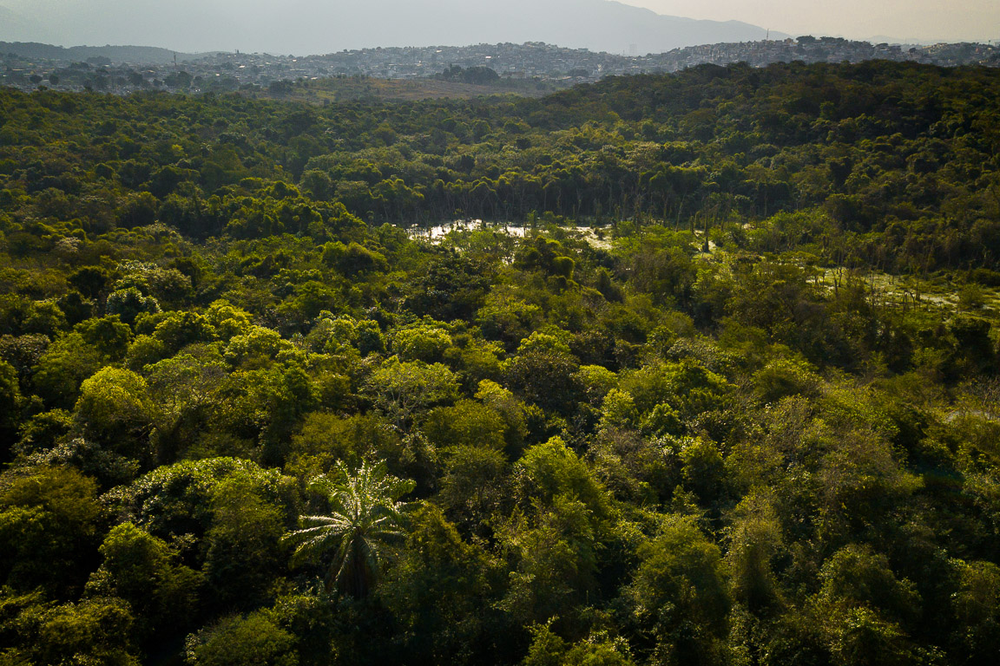

Com o objetivo de preservar e plantar árvores, proteger florestas e enfrentar ameaças como o desmatamento, a organização depende de contribuições financeiras para continuar seu trabalho vital. Qualquer doação, por menor que seja, fará a diferença para um futuro sustentável. Junte-se a nós nessa causa importante e faça sua doação hoje mesmo.
Doar 10 reais para a ONG Doar outro valor Havia uma pequena cidade cercada por uma floresta. Em 2010, Luís fundou a ONG "Amor Pelas Árvores" para proteger as árvores da região. Com voluntários dedicados, eles promoveram conscientização, reflorestamento e limpeza. A comunidade se juntou à causa, empresas apoiaram e a ONG se tornou um exemplo inspirador.
A ONG "Amor Pelas Árvores" usa as redes sociais para conscientizar sobre a importância das árvores, compartilhar histórias inspiradoras, promover ações de preservação e conectar uma comunidade comprometida com a causa. Siga-os nas redes sociais para fazer parte dessa jornada de amor pela natureza.
Youtube Instagram Twitter